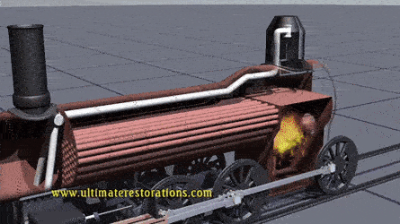
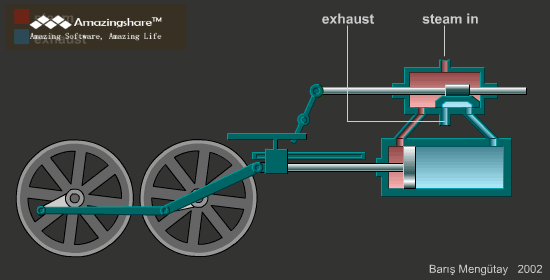
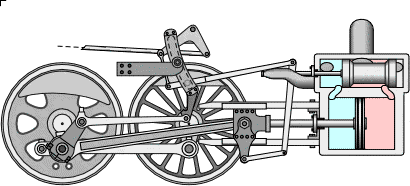

Alternative names shown below are often, but not always, reflective of differences in terminology in the
United Kingdom and some of its former colonies (shown as UK+) and in countries that follow Northern American
practice (shown as US+).

Boiler
A boiler consists of a firebox where the fuel is burned, a barrel where water is turned into steam
and a smokebox which is kept at a slightly lower pressure than outside the firebox.The fire-tube
boiler has internal tubes connecting the firebox to the smokebox through which the combustion gases
flow transferring heat to the water. All the tubes together provide a large contact area, called the
tube heating surface, between the gas and water in the boiler. Boiler water surrounds the firebox to
stop the metal from becoming too hot. This is another area where the gas transfers heat to the water
and is called the firebox heating surface. Ash and char collect in the smokebox as the gas gets
drawn up the chimney by the exhaust steam from the cylinders.The exhaust steam from the engine
cylinders shoots out of a nozzle pointing up the chimney in the smokebox. The steam entrains or
drags the smokebox gases with it which maintains a lower pressure in the smokebox than that under
the firebox grate. This pressure difference causes air to flow up through the coal bed and keeps the
fire burning.

Running Gear
Running gear includes the brake gear, wheel sets, axleboxes, springing and the motion that includes
connecting rods and valve gear. The transmission of the power from the pistons to the rails and the
behaviour of the locomotive as a vehicle, being able to negotiate curves, points and irregularities
in the track, is of paramount importance. Because reciprocating power has to be directly applied to
the rail from 0 rpm upwards, this creates the problem of adhesion of the driving wheels to the
smooth rail surface. Adhesive weight is the portion of the locomotive's weight bearing on the
driving wheels. This is made more effective if a pair of driving wheels is able to make the most of
its axle load, i.e. its individual share of the adhesive weight.Railroads generally preferred
locomotives with fewer axles, to reduce maintenance costs. The number of axles required was dictated
by the maximum axle loading of the railroad in question. A builder would typically add axles until
the maximum weight on any one axle was acceptable to the railroad's maximum axle loading.

Steam Circuit
The steam generated in the boiler fills the space above the water in the partially filled boiler. Its
maximum working pressure is limited by spring-loaded safety valves. It is then collected either in a
perforated tube fitted above the water level or by a dome that often houses the regulator valve, or
throttle, the purpose of which is to control the amount of steam leaving the boiler. The cylinders
are double-acting, with steam admitted to each side of the piston in turn. In a two-cylinder
locomotive, one cylinder is located on each side of the vehicle. The cranks are set 90° out of
phase. During a full rotation of the driving wheel, steam provides four power strokes; each cylinder
receives two injections of steam per revolution. Note that at the two "dead centres", when the
connecting rod is on the same axis as the crankpin on the driving wheel, the connecting rod applies
no torque to the wheel. Therefore, if both cranksets could be at "dead centre" at the same time, and
the wheels should happen to stop in this position, the locomotive could not start moving.

Fuel And water
Generally, the largest locomotives are permanently coupled to a tender that carries the water and
fuel. Often, locomotives working shorter distances do not have a tender and carry the fuel in a
bunker, with the water carried in tanks placed next to the boiler. The tanks can be in various
configurations, including two tanks alongside (side tanks or pannier tanks), one on top (saddle
tank) or one between the frames (well tank). Railways serving sugar cane farming operations burned
bagasse, a byproduct of sugar refining. In the US, the ready availability and low price of oil made
it a popular steam locomotive fuel after 1900 for the southwestern railroads, particularly the
Southern Pacific. In the Australian state of Victoria, many steam locomotives were converted to
heavy oil firing after World War II. German, Russian, Australian and British railways experimented
with using coal dust to fire locomotives.A number of tourist lines and heritage locomotives in
Switzerland, Argentina and Australia have used light diesel-type oil.